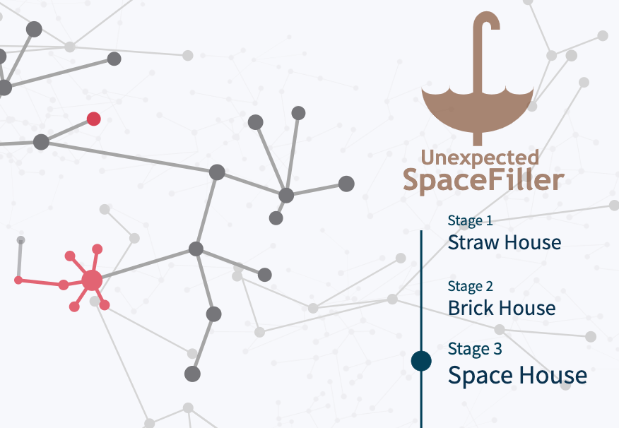

Client work / Presentation infrastructure
One presentation.
Two computers.
A shared timeline.
A configurable presentation for a wall of 30 screens. On site, the installation turned out to run on two separate computers—each driving half the wall.
Read the engineering brief ↗
- Synchronization
- Used WebSocket communication to align the playback position of both instances.
- Determinism
- Replaced independent randomness with a seeded generator so procedural motion matched across displays.
- Rendering
- Projected rotating graphs into 2D SVG using linear algebra, avoiding a full 3D renderer.